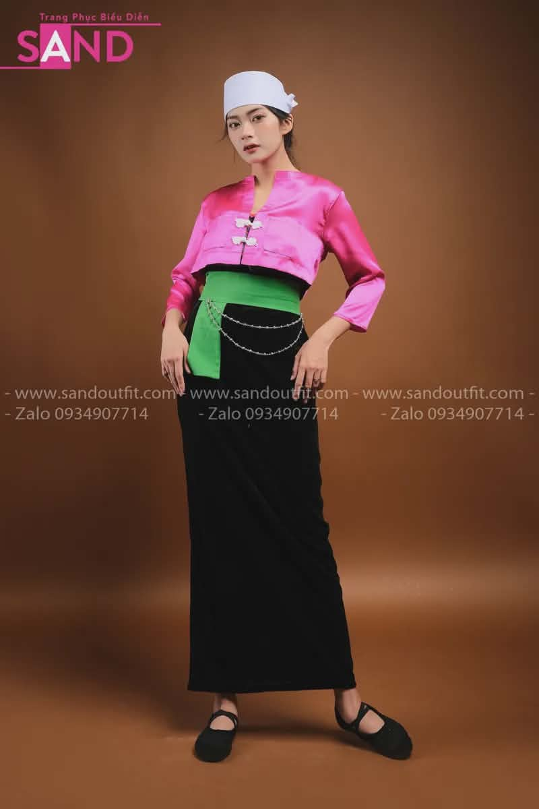
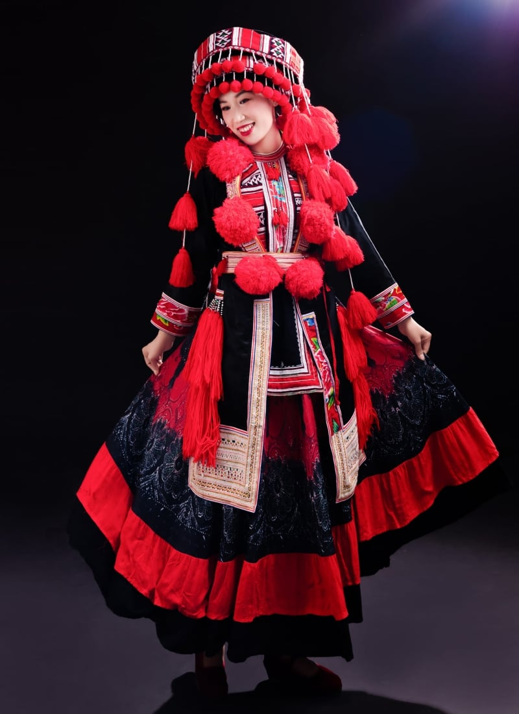
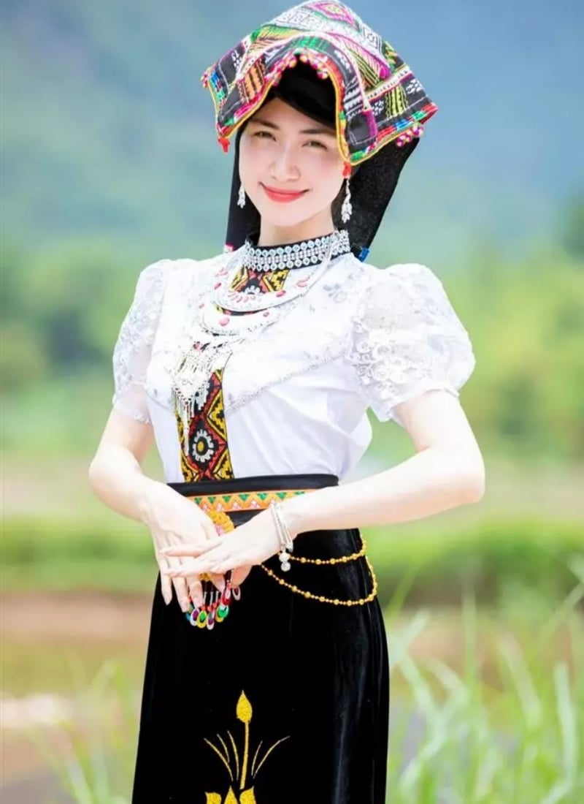
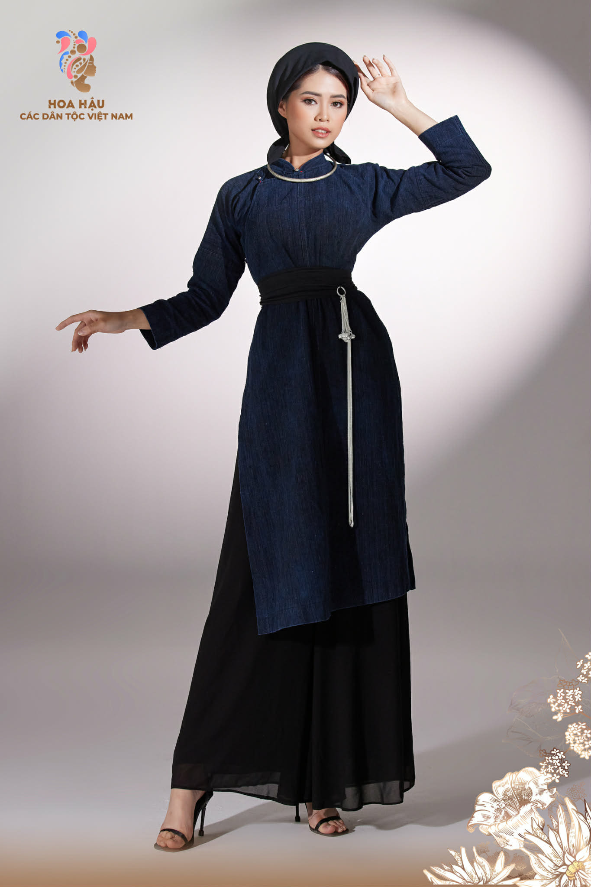
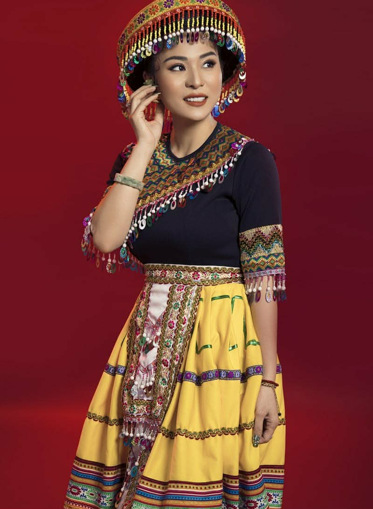
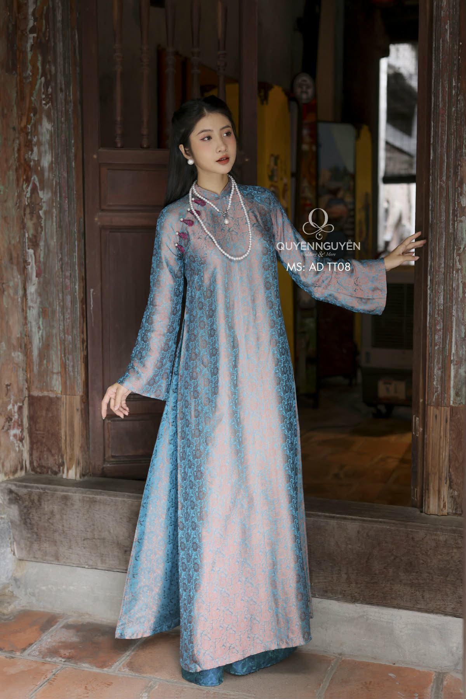

Khám phá vẻ đẹp và ý nghĩa trang phục truyền thống các dân tộc Hòa Bình
Vải bông mềm mại dệt trên khung cửi, vải lanh bền chắc phù hợp vùng núi cao và kỹ thuật nhuộm chàm xanh đen sâu lắng từ thiên nhiên.
Hoa văn hình thoi, zigzag tượng trưng cho cân bằng âm dương. Họa tiết hoa lá, mặt trời phản ánh mối quan hệ mật thiết với núi rừng.
- Phụ nữ mặc áo ngắn (áo pắn) phối váy đen dài. Điểm nhấn là thắt lưng xanh và khăn trắng đội đầu. Nam giới mặc áo chàm/đen đơn giản và quần dài.
- Trang phục phụ nữ Mường là sự kết hợp tinh tế giữa áo pắn (áo ngắn) và váy dài kín đáo. Điểm nhấn đặc trưng nhất là đầu váy, nơi tập trung các đồ án hoa văn dệt tay tỉ mỉ với bố cục chặt chẽ. Khăn đội đầu màu trắng và thắt lưng xanh tạo nên một cấu trúc màu sắc hài hòa, biểu trưng cho vẻ đẹp thanh thoát và tôn quý của phụ nữ xứ Mường.

- Màu chủ đạo đen – chàm – đỏ. Họa tiết thêu tay tinh xảo, kết hợp phụ kiện bông đỏ rực rỡ và đồ bạc cầu kỳ, đặc biệt trong lễ Cấp Sắc và ngày Tết.
- Hệ thống trang phục của người Dao tại Hòa Bình thể hiện kỹ thuật thêu tay đa dạng và phức tạp bậc nhất. Sắc chàm đen chủ đạo làm nền tảng cho sự nổi bật của các chùm bông len màu đỏ rực rỡ và hệ thống trang sức bạc thủ công. Đây không chỉ là trang phục mà còn là minh chứng cho trình độ tư duy thẩm mỹ và kỹ năng thủ công truyền thống thượng thừa.

- Nổi tiếng với Áo Cóm bó sát, hàng khuy bạc và váy dài đen. Khăn Piêu đội đầu thêu hoa văn sặc sỡ là biểu tượng cho sự khéo léo của người phụ nữ Thái.
- Áo Cóm là minh chứng cho sự tinh tế trong kỹ thuật tạo hình, ôm sát cơ thể giúp tôn vinh đường nét tự nhiên nhưng vẫn giữ được sự kín đáo. Hàng khuy bạc hình bướm, hình nhện đại diện cho thế giới tâm linh phong phú. Khăn Piêu – một tác phẩm thêu thùa độc lập – đóng vai trò là biểu tượng văn hóa nhận diện cốt lõi của cộng đồng dân cư vùng thung lũng.

- Mang vẻ đẹp giản dị, thanh lịch với sắc chàm indigo sâu lắng. Áo dài năm thân cắt may suôn thẳng, trang nhã, phản ánh tính cách hiền hòa, điềm đạm.
- Ngôn ngữ thiết kế trang phục Tày hướng đến sự tối giản và trang nhã. Sử dụng cấu trúc áo dài năm thân với đường cắt thẳng đứng, trang phục tập trung vào độ rủ của chất liệu vải chàm tự nhiên. Sự tiết chế trong hoa văn thêu thùa tạo nên một chỉnh thể thẩm mỹ trầm mặc, phản ánh tính cách điềm đạm và chiều sâu văn hóa của tộc người.

- Rực rỡ với váy xòe xếp nếp và kỹ thuật vẽ sáp ong tinh xảo. Trang sức bạc phong phú thể hiện sự giàu có và bản sắc tâm linh mạnh mẽ của dân tộc.
- Váy xếp nếp của người Mông là một kỳ công về kỹ thuật tạo hình đa tầng. Quy trình vẽ sáp ong (batik) kết hợp nhuộm chàm và thêu đắp vải màu tạo nên cấu trúc họa tiết đa sắc diện. Hệ thống trang sức bạc có trọng lượng lớn không chỉ đóng vai trò trang trí mà còn mang giá trị tín ngưỡng hộ mệnh và khẳng định vị thế kinh tế của gia tộc.

- Biểu tượng là tà Áo Dài duyên dáng, ôm sát thân và xẻ tà mềm mại. Chất liệu lụa gấm sang trọng thể hiện nét đẹp thanh lịch của phụ nữ Việt Nam.
- Áo Dài là một bước tiến trong tiến trình hiện đại hóa trang phục truyền thống. Với cấu trúc hai tà trước sau linh hoạt trên nền chất liệu tơ lụa có độ bóng và độ rủ cao, Áo Dài kết hợp hài hòa giữa các giá trị thẩm mỹ phương Đông và tư duy hình thể phương Tây, trở thành biểu tượng quốc phục có sức sống bền vững.
